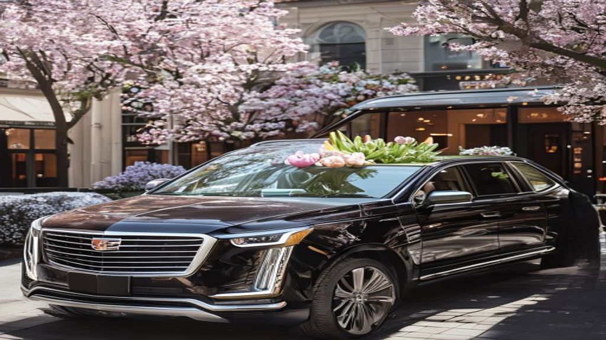

Chicago Mother's Day private car bookings for Sunday May 10 work best as half-day or full-day hourly charters — pickup at home, florist or bakery stop, brunch reservation, an afternoon along the Magnificent Mile or the lakefront, then back home before sunset. Same vehicle, same chauffeur, the entire day.

Mother's Day is the one day of the year designed entirely around making Mom feel celebrated, appreciated, and unmistakably special. The brunch reservation, the bouquet, the handwritten card, the family gathered at the same table — all of it matters. The transportation that holds the day together matters too. Reserve your Chicago Mother's Day private car with us and let us handle every mile.
Why Mother's Day Demands a Different Kind of Ride
Mother's Day in Chicago is the busiest brunch day of the year. Every well-known brunch spot is booked solid, downtown traffic surges, parking near restaurants like RPM Italian, Beatrix, Gibson's, Eden, and the Drake is full by mid-morning, and rideshare prices spike unpredictably between 10 a.m. and 2 p.m. A professional luxury car arrives on time, takes Mom door-to-door without a parking hunt, and removes the stress of timing the morning.
Vehicles Designed for Multi-Generational Mother's Day Groups
Mother's Day rarely involves just two people in a car. It usually involves Mom, the adult children, the spouses, and often the grandchildren — sometimes the grandparents as well. We have vehicles built for every shape of Mother's Day group. Our luxury executive sedans are perfect for a quiet brunch for two or three. Our luxury SUVs comfortably seat six adults with room for flowers, gifts, and a stroller in the back. Our extended SUVs and stretch limousines accommodate eight to twelve, ideal for the kind of multi-generational family Mother's Day celebration where three branches of the family are riding together.
Brunch, Shopping, Lakefront, Spa — Build Your Mother's Day Itinerary
Mother's Day rides do not have to be one drop. Many of our Mother's Day clients book a half-day or full-day hourly charter that follows Mom through the entire day. A typical itinerary might begin with pickup at home, a stop at the florist or bakery, brunch at a downtown restaurant, an afternoon walk along the lakefront or Michigan Avenue, a stop at the Chicago Botanic Garden or Lincoln Park Conservatory, and a final drop-off back at home before sunset. Call 312-448-8787 to design your custom Mother's Day itinerary.
The Surprise Pickup — A Mother's Day Gift She Will Talk About for Years
Some of our most-requested Mother's Day bookings come from adult children who live out of town and want to surprise Mom with a luxury pickup at her home in Chicago. We coordinate quietly with the booking client — usually a son or daughter — and arrive at the agreed time with a polished black sedan or SUV, a bouquet on the rear seat, and the chauffeur in formal attire.
Comfort and Care for Older Mothers and Grandmothers
For families celebrating with an older mother or grandmother — particularly someone with mobility challenges — the right vehicle and the right chauffeur make an enormous difference. Our luxury SUVs sit at a height that is easier to enter and exit than a low sedan or a tall van. Our chauffeurs are trained to assist with entry, fold and stow walkers and wheelchairs, and drive at the gentle, smooth pace that older passengers prefer.
Picking Up the Bouquet, the Cake, and the Surprise
Mother's Day mornings often involve a series of pickups before the main event — flowers from the florist, a cake from the bakery, a gift from the cousin's house. We can build these stops into your Mother's Day route, with the chauffeur handling the curb-side pickups so the booking family member never has to leave the car.
Pricing That Respects Mother's Day Budgets
Mother's Day spending is meaningful but it is not unlimited. Our Mother's Day packages are priced as flat hourly charters or single-trip transfers, with no surge pricing, no peak surcharges, and no hidden fees. A two-hour brunch transfer, a four-hour half-day charter, and a six-hour full-day charter are our most-booked Mother's Day options.
Booking Window for Mother's Day
Mother's Day Sunday is one of the three busiest days of the year for Chicago luxury car service, alongside New Year's Eve and prom Saturday. Brunch-window bookings between 10 a.m. and 1 p.m. are the first to disappear, sometimes booked out three to four weeks in advance.
Reserve Your Chicago Mother's Day Luxury Ride
The flowers will be enjoyed for a week. The brunch will be remembered for a few months. The luxury car arriving at her door, the door opening, and the bouquet on the seat — that becomes the story she tells for years. Schedule Mom's private car for instant confirmation, or call 312-448-8787 to design a custom Mother's Day itinerary with our reservations team.